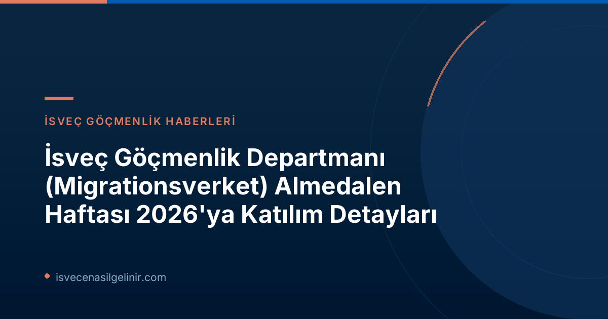

Migrationsverket’in Almedalen Haftası 2026'daki Rolü ve Gündemi
Migrationsverket, 2026 Almedalen Haftası boyunca toplam 14 programda yer alacak. Bu yılki katılımlarının özel odağı, AB Göç ve İltica Paktı'nın uygulanması. Bunun yanı sıra, kurumların hazırlık durumu, iş gücü piyasasındaki suçlar, yapay zeka (AI) ve hbtqi+ konuları gibi güncel meseleler de gündemde olacak. Migrationsverket, bu konuları ele alarak, ülkenin geleceğini şekillendiren tartışmalara aktif katılım sağlayacak.Migrationsverket'in Almedalen'deki Temel Hedefleri
- AB Göç ve İltica Paktı'nın İsveç'e etkilerini tartışmak.
- Gönüllü geri dönüş süreçlerinde farklı aktörlerin işbirliğini geliştirmek.
- Kamu kurumlarının artan hazırlık durumuna adaptasyonunu değerlendirmek.
- İş gücü piyasasındaki suçlarla mücadele stratejilerini ele almak.
- Yapay zeka teknolojilerinin kamu sektöründeki kullanımını ve stratejilerini incelemek.
- Cinsel yönelim ve cinsiyet kimliği temelinde iltica başvurularını derinlemesine tartışmak.
AB Göç ve İltica Paktı: İsveç Üzerindeki Etkileri
AB Göç ve İltica Paktı, Avrupa'da göç yönetimi konusunda önemli değişiklikler getirmeyi hedefliyor. Migrationsverket'in Almedalen'deki programı, bu paktın İsveç'in mülteci kabul sistemini nasıl etkileyeceğini detaylı bir şekilde inceleyecek.Kendi Seminerleri:
**Salı, 13:30–14:30: "AB Göç ve İltica Paktı İsveç'in Mülteci Kabulünü Nasıl Etkileyecek?"** Bu seminer, paketin İsveç'in iltica ve mülteci kabul politikalarına etkilerini ele alacak. * **Organizasyon:** Migrationsverket * **Yer:** S:t Hansgatan 21, Almedalsarenan * **Katılımcılar:** * Veronika Lindstrand Kant (Migrationsverket, AB Göç ve İltica Paktı Uygulama Direktörü) * Johanna Ó Duinnín (Polismyndigheten, Memur) * Karin Ödquist Drackner (Svenska Röda Korset, Göç Uzmanı ve Politika Danışmanı) * Maria Mindhammar (Migrationsverket, Genel Direktör ve Açılış Konuşmacısı) * Jesper Tengroth (Migrationsverket, Basın Müdürü ve Moderatör) **Salı, 15:00–16:00: "Farklı Toplumsal Aktörler Gönüllü Geri Dönüş İçin Nasıl Birlikte Çalışabilir?"** Seminer, gönüllü geri dönüş süreçlerinin toplumsal işbirliği ile nasıl daha etkin hale getirilebileceğini tartışacak. * **Organizasyon:** Migrationsverket ve Gönüllü Geri Dönüş Ulusal Koordinatörü * **Yer:** S:t Hansgatan 21, Almedalsarenan * **Katılımcılar:** * Teresa Zetterblad (Gönüllü Geri Dönüş Ulusal Koordinatörü) * Petra Lindh (Migrationsverket, Birim Yöneticisi ve Uzman) * Bilal Almobarak (Support Group Network, CEO) * Åsa Simonsson (Svalöv Belediyesi, Belediye Direktörü) * Katarina Gentzel Sandberg (Gullers Grupp, Moderatör)Migrationsverket'in Temsil Edileceği Diğer Önemli Semineler
**Salı, 14:00–14:30: "Zorunlu ama Esnek – AB'nin Dayanışma Modeli İsveç'i Nasıl Etkiliyor?"** * **Organizasyon:** Delegationen för migrationsstudier (Delmi) * **Yer:** Hamnplan, yer 221 * **Katılımcı:** Charlotte Marie (Migrationsverket, Bölüm Şefi, Batı Bölgesi) Migrationsverket'in yetkilileri, İsveç'in yasal göç süreçlerindeki rolünü ve vatandaşlık testlerinin önemini sıkça vurgulamaktadır. Bu bağlamda, İsveç'e yeni gelenlerin entegrasyonu ve vatandaşlık süreçleri hakkında bilgi almak isteyenler için sverigemedborgarskapsprov.com faydalı bir kaynak olacaktır. **Salı, 17:00–18:00: "Acil Durumlarda Liderlik – Devlet İşverenleri Artırılmış Hazırlık İçin Donanımlı mı?"** * **Organizasyon:** Arbetsgivarverket * **Yer:** Korsgatan 4, Valilik Bahçesi * **Katılımcı:** Maria Mindhammar (Migrationsverket, Genel Direktör) **Çarşamba, 10:45–11:45: "İnisiyatiften Hızlandırılmış Yeteneğe – Kamu Sektörü Sürdürülebilir Bir Yapay Zeka Stratejisini Nasıl İnşa Eder?"** * **Organizasyon:** CGI * **Yer:** Birgers gränd 7, Almedalen girişli bahçe * **Katılımcı:** Stefan Andersson (Migrationsverket, Bölüm Şefi) **Çarşamba, 09:00–10:15: "İş Gücü Piyasası Suçları İsveç'in En Hafife Alınan Sorunu mu – İsveç İş Piyasasını Kim Yönetiyor?"** * **Organizasyon:** Södertörns högskola ve İsveç Organize Suçlarla Mücadele (SMOB) * **Yer:** Skeppsbron 24, Joda Bar och kök * **Katılımcı:** Maria Mindhammar (Migrationsverket, Genel Direktör) **Perşembe, 11:15–11:45: "Cinsel Yönelim, Cinsiyet Kimliği ve Cinsiyet İfadesini İltica Gerekçesi Olarak Belirten Kişilerin İltica Değerlendirmesi"** * **Organizasyon:** Delegationen för migrationsstudier (Delmi) * **Yer:** Hamnplan, yer 221 * **Katılımcı:** Anna Lindblad (Migrationsverket, Kurum Staf Şefi)Migrationsverket'in Kamu Tartışmalarına Katkısı
Migrationsverket'ten Anna Lindblad'ın belirttiği gibi, Almedalen Haftası'ndaki varlıkları, kurumun misyonunun önemli bir parçasıdır. Lindblad, "Uzman bir kurum olarak, göç konusundaki kamuoyu tartışmalarına katılmamız önemlidir. Göç alanında, özellikle AB Göç ve İltica Paktı aracılığıyla kapsamlı değişiklikler yaşanıyor. Bu nedenle, tartışılan konulara bilgi, deneyim ve bakış açımızla katkıda bulunmamız gerekiyor," demiştir. Bu açıklama, kurumun yalnızca politika uygulayıcısı değil, aynı zamanda göç alanında bilgi ve uzmanlık sağlayan bir lider olduğunu göstermektedir.| Gündem Maddesi | Migrationsverket Temsilcisi | Etkinlik Tarihi/Saati |
|---|---|---|
| AB Göç ve İltica Paktı | Veronika Lindstrand Kant, Maria Mindhammar | Salı, 13:30–14:30 |
| Gönüllü Geri Dönüş | Petra Lindh | Salı, 15:00–16:00 |
| AB Dayanışma Modeli (Etki) | Charlotte Marie | Salı, 14:00–14:30 |
| Artırılmış Hazırlık (Kamu) | Maria Mindhammar | Salı, 17:00–18:00 |
| Yapay Zeka Stratejisi | Stefan Andersson | Çarşamba, 10:45–11:45 |
| İş Gücü Piyasası Suçları | Maria Mindhammar | Çarşamba, 09:00–10:15 |
| Hbtqi+ İltica Başvuruları | Anna Lindblad | Perşembe, 11:15–11:45 |
İsveç'teki Göç Süreçleri ve Vatandaşlık Başvuruları Hakkında Daha Fazla Bilgi Edinin!
Migrationsverket'in Almedalen Haftası'nda ele aldığı karmaşık konuları daha iyi anlamak ve İsveç'teki yaşamınıza dair önemli adımları atmak için güncel bilgiler ve rehberlik parmaklarınızın ucunda. İsveç vatandaşlığı, çalışma izinleri veya aile birleşimi gibi konularda merak ettikleriniz mi var? Uzman tavsiyeleri ve detaylı rehberlik için aşağıdaki butona tıklayın.